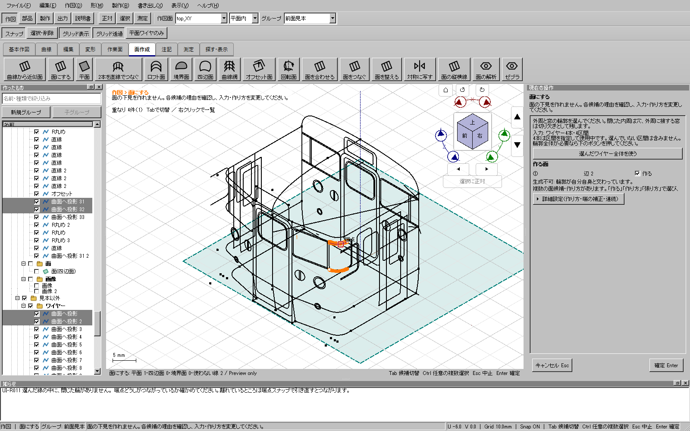
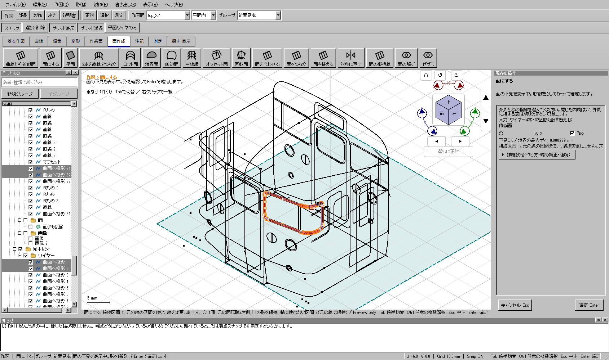
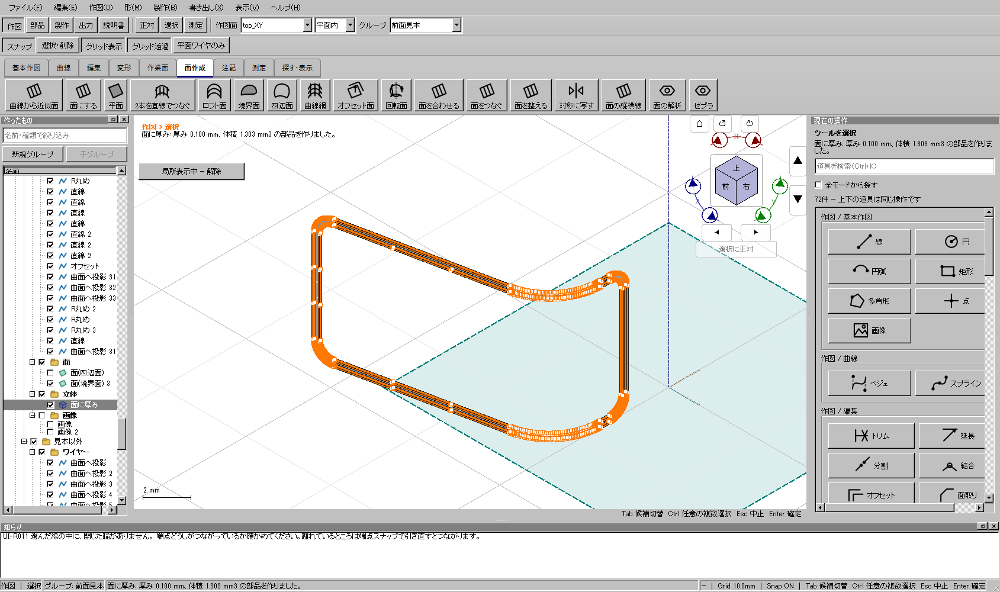

2026-11-03。利用者が回答した「3Dビューの線をCtrl＋クリック」の経路を、更新された115投影のコピーで調べました。左一覧から4本全体を選ぶ試験と区別し、3Dでの部分区間選択から面と立体を作る操作を修正しました。
修正版：GitHubのWindows配布版 ／ このPCの検証済みCAD。製品ソースは4d831c70d。Windows全体195件、開発版・配布版UI各657件に成功し、配布版で添付モデルの操作も再確認しました。
3Dビューで線をCtrlクリックすると、クリックした直線・曲線の区間が選ばれます。左一覧ではその区間を含むワイヤーの行が選ばれて見えるため、ワイヤー全体を面へ渡したように見えていました。4本の曲線をクリックする再現では、実際の入力は4本の部分区間だけで、Hゴムの内外周が揃いませんでした。元画像の正確なクリック位置は保存されていないため、画像と完全に同じ区間を再現したとは断定しません。
右欄に「入力 ワイヤー○本・○区間」と部分選択の状態を表示し、部分選択時は「選んだワイヤー全体を使う」を追加しました。押した場合だけ、その時点で選んだワイヤーを全区間へ切り替えます。未選択の別ワイヤーを加えたり、端を移動したり、許容差を拡大したりはしません。従来の曲線区間だけの選択も保ちます。
画像付きの操作手順も更新しています。通知欄には以前の失敗メッセージが履歴として残る場合があります。現在の右欄の入力数・下見・確定状態を確認してください。



| グループ | ワイヤー | 全区間数 |
|---|---|---|
| 見本以外 | 曲面へ投影 | 7 |
| 見本以外 | 曲面へ投影 2 | 7 |
| 前面見本 | 曲面へ投影 31 | 9 |
| 前面見本 | 曲面へ投影 32 | 9 |
入力32区間のうち、輪に使わない重複した端の8区間は元の線として残します。「曲面へ投影 31 2」はこの4本とは別の線です。入力コピーは1,035,067 bytes、SHA256はf472858638de8413d47da0395e41b7655ca08c55bf3cfc2f256acf86946b1dca。最終検査後も利用者の原本とコピーのSHA256が一致し、原本を上書きしていません。
| 検査 | 結果 |
|---|---|
| Windows全体検証 | CTest195件成功、skip 0。事前検査9件と旧CAD自己試験も成功。 |
| 開発版UI | 657件すべて成功。ケース実測合計955.26秒。 |
| 配布ZIP内のUI | 同じ657件すべて成功。ケース実測合計983.33秒。通常起動も成功。 |
| 配布版＋添付モデル | 実WindowsのQt画面でCtrlマウスイベント→全体切替ボタン→1穴の面→0.1 mm厚み。76.87秒で成功。 |
| 形状と履歴 | 窓内へ材料がないこと、前面の上下と側面に帯があることを検査。元要素の全JSON・UUID・参照を照合し、Undo/Redo・保存再読込後も成功。 |
| 別の操作経路 | 矩形の1辺だけで面候補が出ない状態でも全体切替を表示し、4辺の面へ進めることを確認。未選択ワイヤー不変、取消と別道具経由の選び直しも試験。 |
全体証拠：result.json。添付モデルの配布版操作：packaged-final.json。公開ZIPのSHA256は20eaac895b3c61acf2bd2a154395c322a9a4b42639b020387348789f62e2664dです。
全体検査3回目は開発版・配布版とも656件成功時点で累積900秒の制限に達し、失敗として保持しました。追加した選択欄は面作成を開く時だけ生成する構造へ整理しました。同条件の基本20例の単発比較では16.493秒から15.362秒になりましたが、一般的な速度や60fpsを保証する数値ではありません。読み取りレビューで見つかった「矩形1辺だけでは全体切替が隠れる」漏れを直すため4回目を中断し、5回目も624件成功時点で累積制限に達しました。
機能修正を固定した後、検証管理のWP-12として、ケース完了の進捗停滞180秒と総時間上限1800秒を分けました。全657件を同じ順序・同じ1プロセスで、開発版と配布版それぞれ新規に実行しています。欠落・skip・重複・失敗を拒否する条件は保持し、旧失敗ログを合格へ書き換えていません。親検査の終了時に子のCADが残る経路は、Windows Job Objectで検査プロセス群の終了を結び付けました。
検証基盤18試験では進捗あり・停滞・異常終了・無効な設定、Windowsで親を止めた時の子と孫の終了を確認しています。通常CTestで配布先がTEMPになる不整合も修正し、配布検査だけrepo/out内の一意な場所へ分離しました。詳細は検証手順に記録しています。
主担当が実装・Git変更・ビルド・試験・配布を管理し、既存の読み取り専用UI・回帰担当が別経路と検証管理を確認しました。補助担当は編集・ビルド・試験・アプリ操作を行っていません。ここでの画面操作試験は実CAD内のQtマウスイベントを使い、OS全体を外部マウスで操作した試験とは区別します。
今回の修正は選択範囲の表示と明示的な全体切替です。公開幾何API・保存形式・文書許容差は変更していません。任意の3D輪郭の曲率を常に推測できる保証や、115系車両全体の完成を示すものではありません。理想モデル・近似モデル・プラ板モデルの組合せと組立寸法の確認は継続作業です。